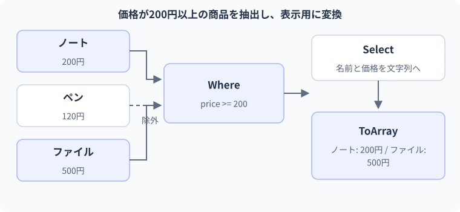

18 LINQで絞り込み・変換 — 詳細解説
絞り込みから表示用データまで。
図解：絞り込みから表示用データまで

ループとLINQの対応
LINQは、データの集まりに対して「条件に合うものを取り出す」「別の形へ変換する」「並べ替える」といった操作を、統一した形で記述する仕組みです。このレッスンではメモリ上の配列やListを対象にします。メモリとはプログラムが実行中の値を保持する場所です。LINQを書くだけでデータベースへ接続されるわけではありません。
for・foreachとWhereは、同じ条件による要素の抽出を表せます。入力・条件・出力を対応させると、各メソッドの役割が明確になります。
① 添字を使うforで抽出する
int[] scores = { 40, 80, 65, 90 };
var passing = new List<int>();
for (int i = 0; i < scores.Length; i++)
{
if (scores[i] >= 70)
{
passing.Add(scores[i]);
}
}
Console.WriteLine(string.Join(", ", passing));期待出力は80, 90です。string.Joinは複数の値の間に区切り文字を挟んで、一つの文字列へまとめます。最初に空のListを作り、iで各得点を読み、条件を満たしたときだけ追加しています。元のscoresは変わりません。
| 読む値 | 条件 | passingの変化 |
|---|---|---|
| 40 | false | []のまま |
| 80 | true | []→[80] |
| 65 | false | [80]のまま |
| 90 | true | [80]→[80,90] |
② foreachで「値を順番に読む」と表す
int[] scores = { 40, 80, 65, 90 };
var passing = new List<int>();
foreach (int score in scores)
{
if (score >= 70)
{
passing.Add(score);
}
}
Console.WriteLine(string.Join(", ", passing));出力は同じです。添字が必要ないので、iの管理をforeachへ任せました。ここで省けたのはループ変数の管理であり、「順番に読み、条件を調べる」という仕事が消えたわけではありません。
③ 条件を渡してWhereへ進む
using System.Linq;
int[] scores = { 40, 80, 65, 90 };
IEnumerable<int> passing = scores.Where(score => score >= 70);
Console.WriteLine(string.Join(", ", passing));期待出力は80, 90です。IEnumerable<int>は「intを順に取り出せる」という約束を表す型です。Listのように必ず全要素を内部保存していることや、添字で読めることまでは約束しません。Whereは要素を受け取りboolを返す条件を使い、trueになった要素だけを順に渡します。
scoreは元の配列の各要素です。score => score >= 70は前のレッスンで学んだラムダ式です。Whereの呼び出しでは通常、まだ全ての条件判定を終えていません。この例ではJoinが要素を列挙、つまり順番に取り出すときに条件が評価されます。詳しい実行時点は次のレッスンで追います。
④ Selectで要素の形を変える
using System.Linq;
int[] scores = { 40, 80, 65, 90 };
IEnumerable<string> labels = scores.Select(score => $"{score}点");
Console.WriteLine(string.Join(" / ", labels));期待出力は40点 / 80点 / 65点 / 90点です。Selectは各要素を一つずつ別の値へ変換します。この例ではintからstringへ変換しています。Whereのように条件不成立の要素を除外する操作ではありません。入力が4要素なら、このSelectも4要素を生成します。
| 操作 | ラムダ式の意味 | この例の出力要素型 | 要素数 |
|---|---|---|---|
| Where(n => n >= 70) | 残すか | int | 0〜元の数 |
| Select(n => $"{n}点") | 何へ変えるか | string | 元と同じ |
| OrderBy(n => n) | 何を基準に並べるか | int | 元と同じ |
| ToList() | 今の列挙結果をListへ保存 | intなど | 列挙した数 |
⑤ メソッドチェーンで順に組み合わせる
using System.Linq;
int[] scores = { 40, 80, 65, 90 };
List<string> labels = scores
.Where(score => score >= 70)
.OrderByDescending(score => score)
.Select(score => $"合格:{score}点")
.ToList();
Console.WriteLine(string.Join(" / ", labels));期待出力は合格:90点 / 合格:80点です。メソッドチェーンとは、メソッドの戻り値に続けて次のメソッドを呼ぶ記述です。「配列→抽出できる列→並べ替えた列→文字列へ変換した列→List」と型と意味が変わります。
- 1入力 int[]
[40,80,65,90]
- 2Whereで抽出
[80,90]に相当する列
- 3OrderByDescendingで整列
[90,80]に相当する列
- 4Selectで表示用へ
[合格:90点,合格:80点]に相当する列
- 5ToListで確定
この時点の結果を新しいList<string>へ保存
これは論理上の段階を表す図です。各段階で必ず別のListを作っているわけではありません。WhereやSelectは列挙要求に応じて要素を渡し、OrderBy系は並べ替えのために入力を保持してから結果を返します。ToListは最後まで列挙して保存します。
実用例：注文から発送対象を作る
using System.Linq;
Order[] orders =
{
new Order(1, "ノート", 2, true),
new Order(2, "ペン", 1, false),
new Order(3, "付箋", 3, true)
};
List<string> shipping = orders
.Where(order => order.IsPaid)
.Select(order => $"注文{order.Id}:{order.Name}×{order.Quantity}")
.ToList();
foreach (string line in shipping)
{
Console.WriteLine(line);
}
public record Order(int Id, string Name, int Quantity, bool IsPaid);期待出力は注文1:ノート×2、注文3:付箋×3です。recordは値をまとめるための型で、第14レッスンで学んだ等値性の生成も持ちます。Whereの条件は既にboolのIsPaidなので、== trueを書かなくても意味が明確です。Selectで画面に必要な文字列だけを作っています。実務ではAPIから受け取った複数データや、既に読み込んだ業務データの表示用加工に使えます。
APIは別のプログラムから機能を呼び出すための窓口です。通信そのものは第28レッスン以降で学びます。ここでは通信済みの結果がOrderの配列に入っていると考えてください。
間違い：Selectで条件を書くと抽出されると思う
using System.Linq;
int[] scores = { 40, 80, 65, 90 };
var result = scores.Select(score => score >= 70);
Console.WriteLine(string.Join(", ", result));観察結果はFalse, True, False, Trueです。Selectは各得点をboolへ変換しています。配列内の値が残ると思った場合は、resultの要素型がIEnumerable<bool>になっている点を確認します。抽出するにはWhereへ修正します。
using System.Linq;
int[] scores = { 40, 80, 65, 90 };
var result = scores.Where(score => score >= 70);
Console.WriteLine(string.Join(", ", result));修正後は80, 90です。「条件を書けたか」だけではなく「メソッドはその条件を何に使うか」を考えます。Whereは残す判定、Selectは出力値の計算です。
間違い：並べ替えで元の配列も変わると思う
using System.Linq;
int[] numbers = { 3, 1, 2 };
var sorted = numbers.OrderBy(number => number).ToArray();
Console.WriteLine(string.Join(",", numbers));
Console.WriteLine(string.Join(",", sorted));期待出力は3,1,2、1,2,3です。OrderByは並べ替え結果を取得する操作であり、元の配列を書き換える操作ではありません。元のList自体を並べ替える必要があるならList.Sortなど、状態を変更する別の操作を検討します。結果を返す処理と、対象を直接変更する処理を混同しないでください。
LINQを使わないほうが伝わる場合
途中で何度も状態を書き換える、外部へ通知する、複数の条件でbreakする、といった手順はforeachのほうが分かりやすいことがあります。Selectの中で別のListへAddするような副作用を詰め込むと、いつ実行されるかが分かりにくくなります。副作用とは、戻り値を返す以外に外部の状態を変えることです。
まずは「入力を読む→必要な結果を作る」部分をLINQにし、表示・保存などの作業は明示的なループやメソッドに分けると追跡しやすくなります。
3段階の練習
基礎：{1,2,3,4,5}から3以上を抽出し、3,4,5を表示してください。解答の中心はnumbers.Where(n => n >= 3)です。同じ処理をforeachとifでも書き、どちらにも同じ判定があることを説明します。
標準：偶数だけを残して10倍し、{1,2,3,4}から20,40を作ってください。Where(n => n % 2 == 0).Select(n => n * 10)が解答です。WhereとSelectを逆にしてから偶数判定すると、元は奇数だった値も10倍後は偶数になり、目的が変わります。
応用：発送対象を注文IDの降順で表示してください。OrderByDescending(order => order.Id)をSelectの前へ入れます。文字列に変換した後ではOrderのIdプロパティへアクセスできないので、どの型の段階で並べ替えるかを確認します。配列が空でも表示ループが0回で終わることまで考えます。
境界・比較例：条件の違いと取得件数
Take(2)はその段階の列から先頭2件を取ります。元配列の長さを2へ変えるわけではありません。
int[] prices = { 100, 200, 300, 400 };
int[] result = prices.Where(p => p >= 200).Take(2).ToArray();
Console.WriteLine(string.Join(", ", result));
Console.WriteLine(prices.Length);想定出力
200, 300
4公式資料
確認日：2026年9月14日。本文の理解を補うための資料です。学習対象は.NET 10 / C# 14です。パッチ番号は固定しません。